+ Реконструкция (эпизоды 2, 4) Субтитры: Русские и Английские | 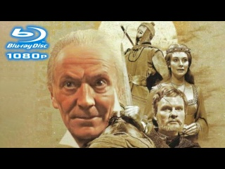 |
+ Фанатская CGI анимация (эпизоды 2, 4) WhoRecons Субтитры: Русские и Английские | 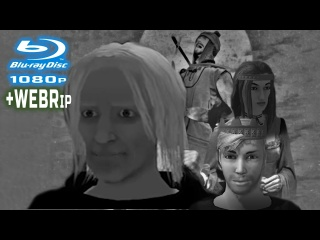 |
+ Фанатская анимация (эпизоды 2, 4) Адам Баллок Субтитры: Русские | 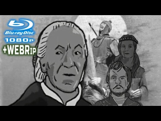 |
+ Фанатская AI-реконструкция (эпизоды 2, 4) Йен Ливайн Субтитры: Русские и Английские | 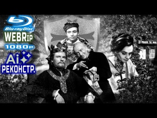 |
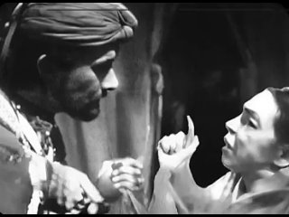
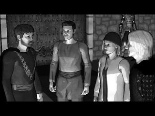 эп.2 - Рыцарь Яффы. Отрывок: Вступительная сцена (Asterione) | 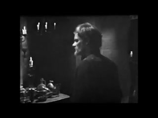 эп.2 - Рыцарь Яффы. Отрывок: Вступительная сцена (AL REVIEWS WHO) |
| 1. Лев | Найден в 1999 году - 16mm t/r |
|---|---|
| 2. Рыцарь Яффы | Утерян (имеется реконструкция) |
| 3. Колесо Фортуны | Сохранился - 16mm t/r |
| 4. Военачальники | Утерян (имеется реконструкция) |
| | |
«Крестовый поход» погружает команду в эпицентр средневекового противостояния: Доктор оказывается между армиями крестоносцев и сарацин, где политика и честь переплетены с жестокостью эпохи. Герои сталкиваются с реальными историческими фигурами и вынуждены лавировать между долгом и выживанием, не меняя ход истории. Серия мастерски показывает войну без однозначных злодеев — через призму человеческих решений и моральных компромиссов. Её сила — в напряжении, рождённом не фантастическими угрозами, а реальной исторической драмой.
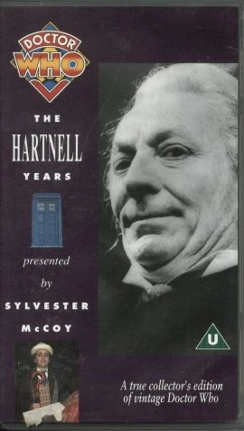  VHS - 1991(3) / июль 1999(1,3) |  DVD - 1 ноября 2004 |
|---|---|
 Реконструкция от Loose Cannon |  Blu-ray - 5 декабря 2022 * Версия в нашей группе |
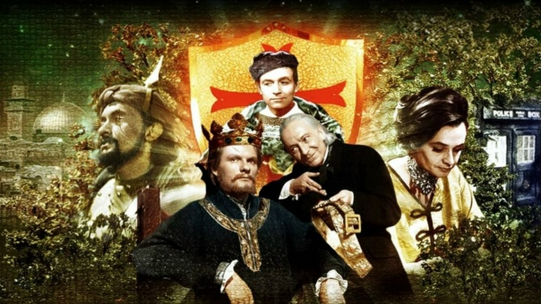
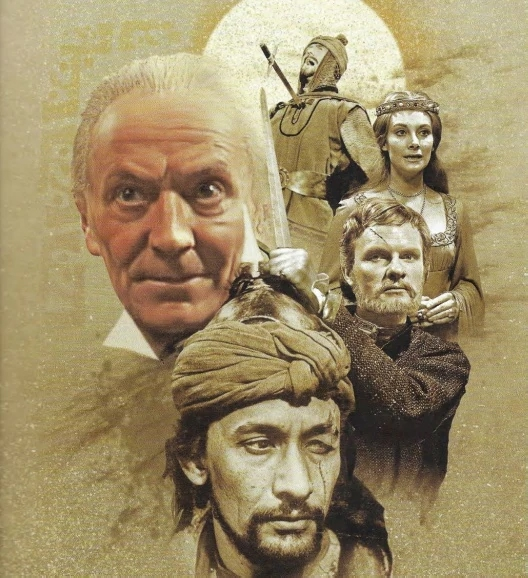
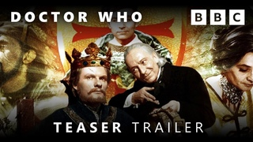